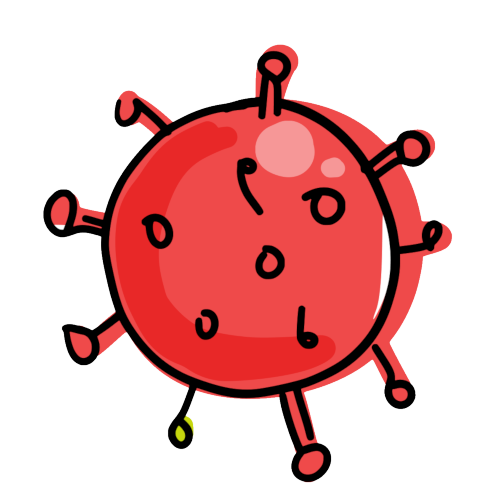

Compêndio de informação e links sobre a COVID-19.
Esta página foi criada para reunir informação sobre a progressão da COVID-19:
- dashboards;
- endereços de organismos oficiais;
- endereços de organizações voluntárias.
A informação nesta página é atualizada por um voluntário. Se algo não estiver correcto, entra em contacto comigo através do Twitter.
